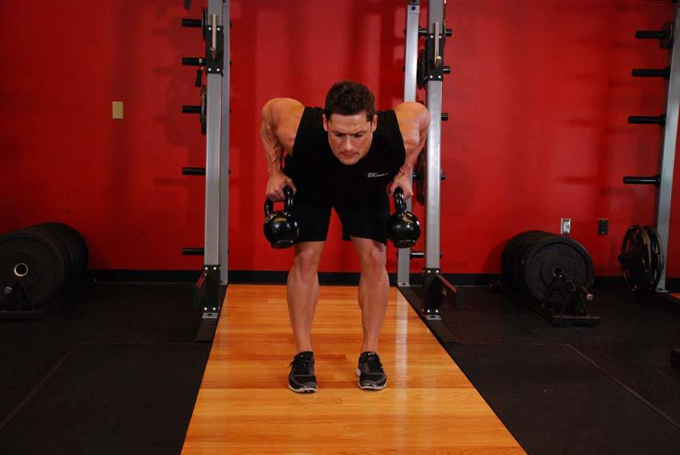

- Place two kettlebells in front of your feet. Bend your knees slightly and then push your butt out as much as possible as you bend over to get in the starting position.
- Grab both kettlebells and pull them to your stomach, retracting your shoulder blades and flexing the elbows. Keep your back straight. Lower and repeat.